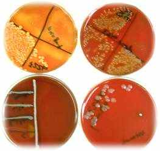

Microbiology
Knowledge of the organisms causing problems in a particular herd is the cornerstone of mastitis control. Tests like culturing, ELISA, farm-side tests etc. can be used to detect mastitis and identify the causative organism.
Direct Stain
A smear from milk deposited on a glass slide can be stained with methylene blue for direct microscopic examination.
Blood Agar
Milk samples can be plated on blood agar for culture. Most veterinary practices send samples to a diagnostic laboratory for culturing.
Antibiotic sensitivity testing is also routinely performed by diagnostic labs.
Testing milk samples is important in dealing with herd mastitis problems, both to understand the source of the problem (environmental vs. contagious).
The information gained by culturing samples could also be useful when treating refractory clinical cases.